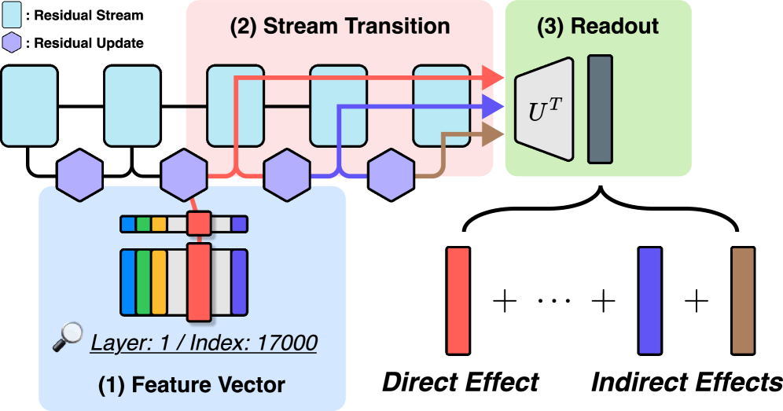

Query Lens: Interpreting Sparse Key-Value Features with Indirect Effects
ICML 2026
Hwiyeong Lee, Ingyu Bang, Uiji Hwang, Hyelim Lim, Taeuk Kim
One-Line Summary
We propose Query Lens, an extension of Logit Lens that jointly interprets encoder-side key features and decoder-side value features of a sparse autoencoder and additionally accounts for indirect, module-mediated effects. This yields coherent token signatures for sparse features that remain uninterpretable under Logit Lens, and motivates the Subspace Channel Hypothesis: downstream modules read features through layer-specific subspaces.

Figure 1. Overview of Query Lens. (a) A feature written into the residual stream is read as a query by downstream modules, producing indirect effects. (b) Logit Lens projects features directly into vocabulary space and misses these indirect effects; Query Lens accounts for them and provides a more faithful interpretation.
Background & Motivation
Sparse autoencoders (SAEs) have become a central tool in mechanistic interpretability because they decompose model activations into features that are far more monosemantic and human-interpretable than individual neurons. Yet obtaining an SAE feature is only the first step: reliably characterizing what each feature actually means -- which inputs excite it and which behaviors it drives -- remains a stubborn, open challenge.
A widely used technique for this characterization is the Logit Lens, which projects a feature vector directly into the model's vocabulary space via the unembedding matrix to reveal the tokens it appears to promote. Logit Lens is attractive for its simplicity and its training-free nature, but it captures only the direct path from a feature to the output logits. Many features written into the residual stream are not consumed directly by the unembedding; instead, they are re-read and transformed by downstream attention and MLP modules before ever influencing the output.
Because Logit Lens ignores this downstream processing, a large fraction of SAE features project onto incoherent or meaningless token sets, leaving them effectively uninterpretable. This motivates a lens that follows features through the modules that actually read them, rather than assuming a straight shot to the vocabulary.
Key Challenge: Logit Lens fails to interpret many SAE features because it only captures the direct effect -- the immediate projection of a feature into vocabulary space. A feature written into the residual stream is frequently read as a query by downstream modules, producing indirect, module-mediated effects that Logit Lens is blind to. Any interpretation that ignores these indirect effects can therefore be both incomplete and unfaithful.
Proposed Method: Query Lens
Query Lens generalizes the Logit Lens by treating an SAE feature not as a single quantity that only promotes output tokens, but as a key-value object whose encoder side and decoder side carry complementary meaning, and by explicitly propagating the feature through the downstream modules that consume it.
1
Jointly Model Key and Value Features
Instead of inspecting a feature from a single vantage point, Query Lens jointly considers the encoder-side key features and the decoder-side value features of the SAE. The key side reveals which inputs activate the feature, while the value side reveals which outputs the feature promotes. Reading both sides together gives a two-sided, input-to-output characterization that a value-only view (as in Logit Lens) cannot provide.
2
Account for Indirect, Module-Mediated Effects
A feature written into the residual stream is re-read as a query by downstream attention and MLP modules, which transform it before it reaches the output. Query Lens propagates the feature through these modules to capture the resulting indirect effects, going beyond the single direct effect that Logit Lens measures. This makes the interpretation faithful to how the feature is actually used by the network.
3
Produce Coherent Token Signatures
Combining the key/value view with the indirect effects, Query Lens assigns each feature a coherent set of tokens -- a token signature -- describing what it responds to and what it drives. Crucially, this recovers meaningful signatures for features whose Logit Lens projections were incoherent, expanding the set of features that can be interpreted at all.
4
Subspace Channel Hypothesis
The analysis leads to the Subspace Channel Hypothesis: downstream modules do not read features from the full residual stream uniformly, but through layer-specific subspaces. Under this view, a feature's downstream influence depends on how it projects onto the particular subspace that each reading module attends to, offering a structured explanation for why indirect effects matter and why they are layer-dependent.
Experimental Results
The evaluation compares Query Lens against the standard Logit Lens on the task of characterizing SAE features. The central, faithful finding from the paper is qualitative: Query Lens yields coherent token signatures for features that remain uninterpretable under Logit Lens, precisely because it incorporates the key/value structure and the indirect, module-mediated effects that Logit Lens omits. The table below summarizes the conceptual comparison rather than any single benchmark score.
Interpretation Method
Feature Sides Used
Effects Captured
Interpretability Coverage
Logit Lens
Value only (output projection)
Direct effect only
Limited — many features incoherent
Query Lens (ours)
Key + Value (input & output)
Direct + indirect (module-mediated)
Broader — coherent signatures recovered
Recovered interpretability: Features that project onto incoherent token sets under Logit Lens receive coherent token signatures under Query Lens, showing that the missing structure was in the indirect, module-mediated effects.
Two-sided characterization: Jointly reading encoder-side key features and decoder-side value features identifies both the inputs that activate a feature and the outputs it promotes, a description that value-only Logit Lens cannot produce.
Faithfulness over directness: By following features through the downstream modules that actually read them, Query Lens produces interpretations aligned with how the network uses each feature, rather than assuming a direct path to the vocabulary.
Structural hypothesis: The results support the Subspace Channel Hypothesis -- that downstream modules read features through layer-specific subspaces -- providing a principled account of why indirect effects are layer-dependent.
Why It Matters
Reliable interpretation of sparse features is a prerequisite for trusting mechanistic explanations of large language models. If a widely used lens systematically mislabels or fails to characterize a large fraction of features, downstream claims about what a model "knows" or "does" inherit that blind spot. Query Lens directly addresses this by making the interpretation faithful to how features are actually consumed inside the network.
More features become interpretable: By recovering coherent signatures for previously uninterpretable features, Query Lens expands the effective coverage of SAE-based interpretability.
Faithful, two-sided view: Jointly considering key and value features and accounting for indirect effects yields characterizations that respect the model's real computation, reducing the risk of misleading, direct-path-only conclusions.
New structural understanding: The Subspace Channel Hypothesis reframes how downstream modules read residual-stream features, opening a concrete direction for studying feature communication through layer-specific subspaces.